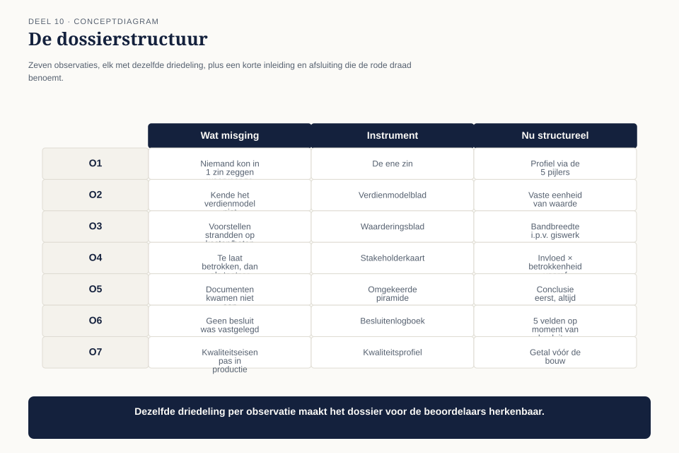

Deel 10 — Examentraining CITA-F en capstone
Slidedeck · Ductus-cursus BTABoK · Niveau 1 · deel 10 van 30 · 25 slides
Slide 1 — Titel: Examentraining CITA-F & Capstone
Deel 10 — de afsluiting van niveau 1
Ductus
Slide 2 — Agenda: Vandaag
- De zeven observaties, teruggeblikt
- Het proefexamen
- Het minimum viable architecture-dossier
- Drie rollen, drie vragen
- Wat het panel niet wil horen
- De verdediging
Slide 3 — Sectie: 1. De zeven observaties
Slide 4 — Figuur: De hele boog van niveau 1

Slide 5 — Tabel: Van probleem naar instrument
| O | Instrument |
|---|---|
| O1 | de ene zin |
| O2 | verdienmodelblad |
| O3 | waarderingsblad |
| O4 | stakeholderkaart |
| O5 | omgekeerde piramide |
| O6 | besluitenlogboek |
| O7 | kwaliteitsprofiel |
Slide 6 — Statement: Negen delen. Zeven observaties. Eén instrumentarium.
Slide 7 — Sectie: 2. Het proefexamen
Slide 8 — Bullets: CITA-F, echt en op schaal
- Echt: 75 vragen, 2,5 uur, 70% om te slagen
- Proef vandaag: 40 vragen, 90 minuten, dezelfde grens
- Verdeeld naar rato van competenties per pijler
Slide 9 — Statement: Het examen toetst begrippen
Niet of je een instrument uit je hoofd kunt tekenen
Slide 10 — Sectie: 3. Het dossier
Slide 11 — Citaat: Niet het volledige archief van het afgelopen jaar. De kleinste, best gekozen sel
Niet het volledige archief van het afgelopen jaar. De kleinste, best gekozen selectie die het besluit draagt.
Slide 12 — Figuur: De dossierstructuur

Slide 13 — Tabel: Per observatie
| 1 | Wat misging — één zin |
|---|---|
| 2 | Instrument + concreet voorbeeld |
| 3 | Wat structureel is veranderd |
Slide 14 — Statement: De drie rode draden horen in de inleiding en de afsluiting
Niet verspreid door de zeven observaties
Slide 15 — Sectie: 4. Drie rollen, drie vragen
Slide 16 — Tabel: Eén panel, drie belangen
| Rol | Let op | Vraag |
|---|---|---|
| CIO | herhaalbaarheid | “Wat als jij weggaat?” |
| Financieel directeur | terugverdiening, type investering | “Wat heeft dit bespaard?” |
| Directeur Uitvoering | snelheid vs. vertraging | “Wordt mijn team hier sneller van?” |
Slide 17 — Statement: Eén antwoord voor alle drie werkt niet
Eén kern. Drie registers.
Slide 18 — Sectie: 5. Wat het panel niet wil horen
Slide 19 — Bullets: Drie fouten
- Chronologisch verhaal i.p.v. driedeling per observatie — de fout uit deel 5
- Technische details die het besluit niet dragen — hoort in de bijlage
- Beweringen zonder bewijs — de kwalitatieve risicoformulering van O3, terug van weggeweest
Slide 20 — Sectie: 6. De verdediging
Slide 21 — Citaat: Een jaar geleden kon niemand in deze kamer uitleggen waarvoor ik aan tafel zat.
Een jaar geleden kon niemand in deze kamer uitleggen waarvoor ik aan tafel zat. Vandaag laat ik zien wat er is veranderd — en waarom dat niet van mij persoonlijk afhangt.
— opening van de verdediging
Slide 22 — Citaat: Als ik nu aan iemand in dit bedrijf zou vragen waarvoor jij aan tafel zit, wat z
Als ik nu aan iemand in dit bedrijf zou vragen waarvoor jij aan tafel zit, wat zouden ze zeggen?
— Bart Hoekstra, slotvraag
Slide 23 — Statement: "Ik zorg dat Meridiaan zijn technologiegeld uitgeeft aan de dingen die de deelnemer merkt, en dat we over vijf jaar nog kunnen uitleggen waarom we die keuzes maakten."
Slide 24 — Bullets: Niveau 1 afgesloten
- Zeven observaties gesloten
- Negen instrumenten geleerd
- Vijf kernpijlers doorlopen
- Wat níet is afgesloten: de spanning rond governance — dat komt terug in niveau 2
Slide 25 — Titel: Niveau 2 begint
Deel 11 — Het engagement model
Claudette krijgt haar eerste formele opdracht binnen een transformatieprogramma.